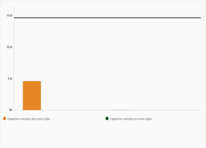

Arte e Conceito
Arte e Conceito O ingresso universitário não-tradicional
O ingresso universitário não-tradicional Insustentabilidade Fashion
Insustentabilidade FashionA IMPORTÂNCIA DAS OLIMPÍADAS DO CONHECIMENTO NUM PAÍS DESINTERESSADO PELA CIÊNCIA
Num cenário pandêmico, em que a ciência é a protagonista no combate à crise sanitária, o investimento brasileiro em pesquisas científicas é o menor dos últimos 12 anos. Dos quase 15 bilhões previstos no Portal da Transparência do Governo Federal, pouco mais que 4 bilhões foram destinados à área.
No início deste ano, a Associação Nacional de Pós-Graduandos (ANPG) mobilizou um abaixo-assinado com mais de 51 mil assinaturas, pedindo reajuste no valor das bolsas de pós-graduação. A escassez de recursos e investimentos tem obrigado os pesquisadores nativos a buscarem sucesso no exterior.
Ao contrário do que se era exigido para enfrentar a pandemia de Covid-19, a situação brasileira fomentou o negacionismo e o consequente descaso para com os estudos. Somado a falta de recursos financeiros, o país foi impedido de tentar superar a doença, assim sendo submetido à importação de vacinas, por exemplo. Em outro cenário, caso houvesse a participação no progresso científico por parte do Brasil, os reflexos impactariam significantemente em sua economia.
Nesse contexto de desvalorização do conhecimento teórico, a maioria dos estudantes da Educação Básica não demonstra interesse pela pesquisa e pela ciência. A fim de tentar reverter a falta de interesse, as olimpíadas de conhecimentos são promovidas pelas escolas e visam estimular a curiosidade dos alunos
As competições exploram desde matemática e ciências naturais até história do Brasil. O intuito é promover o conhecimento por meio de provas externas, realizadas nas escolas, concorrendo a medalhas e certificados de honra ao mérito. Tais realizações atuam sobre o aluno como uma iniciação no mundo científico, envolvendo temas externos para que haja interesse pelo extracurricular, pela pesquisa.
Portanto, a proposta apresenta benefícios no processo de aprendizagem, sobretudo para o aluno, sob a perspectiva de um futuro com maior interesse e valorização da ciência, em que os cidadãos identifiquem a contribuição das pesquisas para o desenvolvimento humano e reconheçam a necessidade de manutenção da área. Essa mudança representa ascensão da consciência coletiva, dos estudos e até da economia.